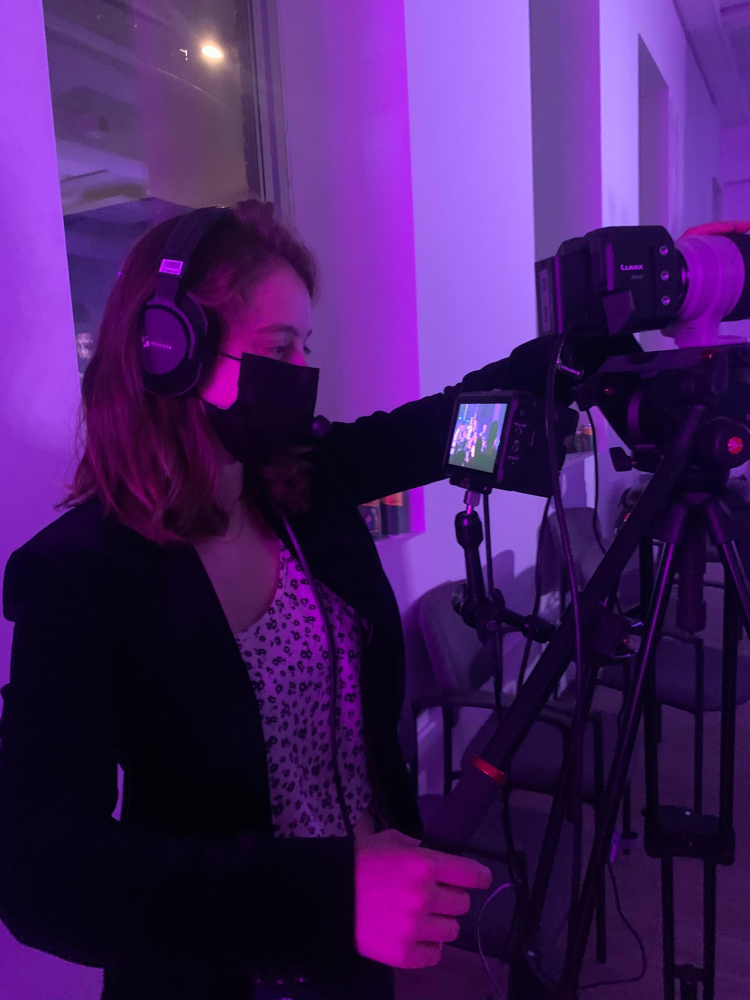
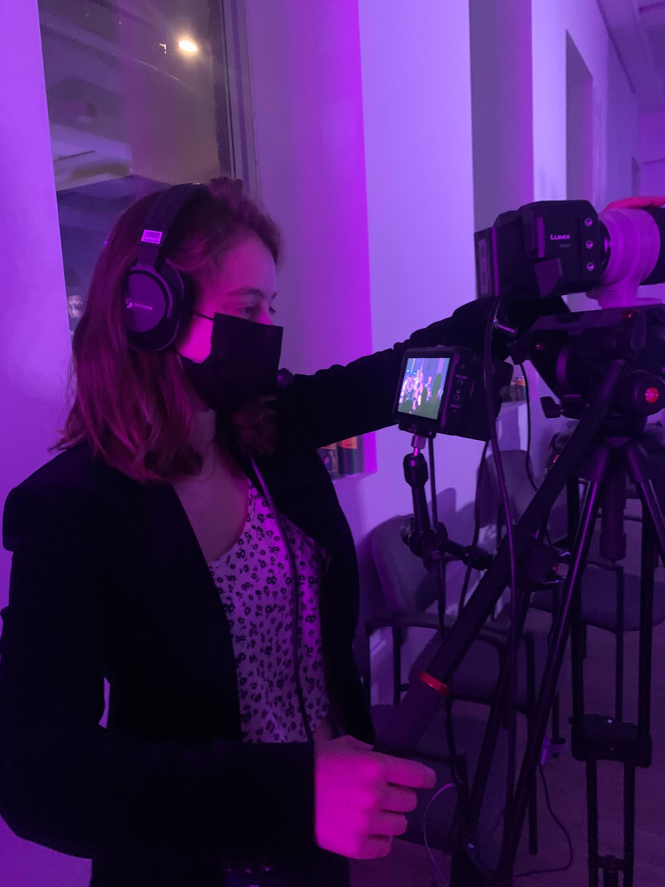

Biographie
Vanille Debray est une compositrice basée à Montréal. Elle écrit des bandes son orchestrales, électroniques, et est productrice de chansons indie-pop. Pianiste de formation classique et chanteuse, elle grandit dans le Sud de la France avant de partir pour Montréal, où elle obtint en 2018 un Bachelor's en musique à l'université McGill. Après avoir travaillé sur de nombreuses chansons indie-folk et indie-pop, elle prépare actuellement la sortie de son prochain EP électro-pop, Bigtime, qui verra le jour en Juillet 2022.
EDUCATION
Université McGill, Montréal
B.A. en Musique et Technologie de la Musique
Matières:
- • Solfège avancé
• Piano et chant jazz
• Production vidéo
- • Musicologie
• Production de musique digitale
• Orchestration
Année de Qualification en Enregistrement du Son
Matières:
- • Enregistrement du son
• Production musicale
• Ingé son pour le live
- • Electroacoustique
• Electronique
• Montage de la musique
Sep 2014 - Avril 2018
 
